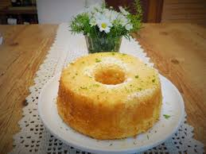

Bolo de laranja com casca

Bolo:
- 1 laranja média
- 1 xícara de chá de óleo
- 4 ovos
- 2 xícaras de chá de açúcar
- 2 xícaras de chá de farinha de trigo
- 1 colher de sopa de fermento em pó
Cobertura:
- 2 xícaras de chá de suco de laranja peneirado
- 1 colher de sopa de amido de milho
- Corte a laranja em 4 pedaços, retire a parte branca do miolo e as sementes que estiverem aparentes.
- Bata no liquidificador as laranjas, o óleo, os ovos e o açúcar.
- Em uma vasilha, misture a farinha de trigo e o fermento.
- Adicione o conteúdo do liquidificador à mistura, mexendo com colher de pau (não bater em batedeira).
- Leve ao forno médio por aproximadamente 25 minutos em forma untada com margarina e polvilhada com farinha de trigo.
Modo de preparo:
- Misture em uma panela todos os ingredientes e leve ao fogo, mexendo sempre até ferver. Deixe cozinhar um pouco e despeje sobre o bolo assado ainda quente.